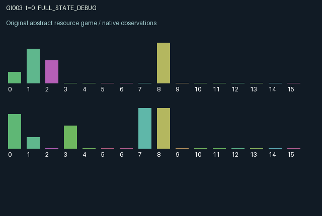

GI003 / LEGACY_ARRAY
Owned gates on a shared circular route
2 agents5 actions16 observation columns32 original horizonRuntime: PASS
Release verification episode
Untrained uniform legal actions. Actual JAX state sampled along the full original episode; full-state debug camera. No human performance or learning claim.

Run this game
crucibles play --game 3
Start Python locally, then open the address printed by the terminal. Installation, multiplayer, takeover and keyboard controls →
Objective, rewards & ending
Exact task contract
{
"termination": "Original kernel t >= 32; see mechanism and source"
}Declared per-step reward bounds: -1.0 to 1.0. Observability: source_defined.
Rules
Original mechanism document (historical status wording retained)
# Owned gates on a shared circular route Status: authored proposal, not executed or validated. Two couriers move on an eight-location ring. Agent zero controls the edge between locations one and two; agent one controls the edge between five and six. Either owner can toggle its own gate from anywhere, and the resulting open/closed state persists. Moves use old gate states, so a same-step toggle changes passage opportunities only on a later step. Each courier chooses wait, clockwise move, anticlockwise move, toggle, or delivery. Delivery succeeds only at its currently designated target, then shifts that target to the opposite ring location. Positions may coincide. Co-location reduces successful delivery payment, introducing a congestion incentive without order-dependent collision resolution. Gate control can facilitate or obstruct either courier; everyone can also take the longer ring path. Positions, targets, gates, clock, role identity, own previous action, own recent delivery and blocked-move indicators are observed. There is no hidden physical state. Each legal action remains available everywhere, with ineffective deliveries returning zero and blocked moves staying in place. Successful deliveries pay 0.5 or 0.8, toggles cost 0.03, and blocked movement costs 0.02; rewards are bounded within [-1,1]. This resembles generic navigation with persistent switches and congestion, rather than any asserted unprecedented mechanism. Structural distinctness, mechanism qualification, compiler behavior, and learning effectiveness remain unassessed. Initial positions use the explicit random key; both agents affect persistent positions and gate states. Terminal observations retain the final state after 32 transitions.
Commands
0Action 0; see mechanism and source
1Action 1; see mechanism and source
2Action 2; see mechanism and source
3Action 3; see mechanism and source
4Action 4; see mechanism and source
Roles & abilities
agent_0 Original legacy agent; see mechanism and source
agent_1 Original legacy agent; see mechanism and source
Observation permissions
Training receives only the original observation rows. Role cameras use declared visibility; debug cameras are explicitly marked. Local benchmark records log debug exposure and role takeover history.
Exact observation layout
[]
Entity visibility & attributes
[]
Actual verification & provenance
Per-game execution receipt
{
"game": "gi003",
"status": "PASS",
"verification_revision": 2,
"source_sha256": "0c110564cb14fd82f5d6901d500568d9c566d93dd543b6f4d0c97d5a8ae3b735",
"seed": 20261101,
"runtime": {
"jax": "0.4.38",
"numpy": "1.26.4",
"devices": [
"TFRT_CPU_0"
]
},
"dimensions": {
"num_agents": 2,
"observation_size": 16,
"num_actions": 5,
"max_steps": 32
},
"checks": {
"eager_reset": {
"status": "PASS",
"seconds": 0.9752883911132812
},
"observation_spaces_legal_masks": {
"status": "PASS",
"seconds": 0.12469601631164551
},
"eager_step": {
"status": "PASS",
"seconds": 0.46491312980651855
},
"jit_reset": {
"status": "PASS",
"seconds": 0.21117854118347168
},
"jit_step": {
"status": "PASS",
"seconds": 0.17078757286071777
},
"eager_jit_integer_parity_float_measurement": {
"status": "PASS",
"seconds": 0.0015225410461425781
},
"jit_vmap_reset": {
"status": "PASS",
"seconds": 0.29535794258117676
},
"jit_vmap_step": {
"status": "PASS",
"seconds": 0.2988286018371582
},
"outer_autoreset_api": {
"status": "PASS",
"seconds": 0.47240447998046875
},
"full_original_horizon_episode_and_render": {
"status": "PASS",
"seconds": 0.975895881652832
}
},
"human_scores": null,
"browser_controls": "PENDING",
"failures": [],
"elapsed_seconds": 4.614613056182861,
"float_parity_max_abs": 5.960464477539063e-08,
"numerical_parity": "UNDETERMINED_NONZERO_FLOAT_DIFFERENCE",
"raw_terminal_absorbing": "NOT_PART_OF_ORIGINAL_LEGACY_CONTRACT",
"terminal_outer_reset": "PASS",
"episode_steps": 32,
"scripted_random_returns": [
-0.24999999441206455,
0.5800000168383121
],
"terminal": true,
"demo_information": "FULL_STATE_DEBUG",
"demo_frames": 33,
"render_roles_checked": 2
}Chromium control verification
{
"game": "gi003",
"status": "PASS",
"human_scores": null,
"engineering": true,
"checks": [
"catalog_selected_and_real_native_reset",
"dom_queue_and_native_step",
"second_participant_ownership_and_native_joint_step",
"all_roles_individually_controllable_no_role_cap",
"explicit_debug_camera",
"release_to_pure_ai_without_reset"
],
"ui_sha256": "15b5861d23b3c42811865c954d5a988280bbfd21cf8e93754be2437a027158c5",
"seconds": 2.676983118057251
}Original identity and file hashes
{
"id": 3,
"key": "gi003",
"title": "Owned gates on a shared circular route",
"summary": "",
"tags": [],
"family": "legacy_array",
"dimensions": {
"num_agents": 2,
"observation_size": 16,
"num_actions": 5,
"max_steps": 32
},
"source_sha256": "0c110564cb14fd82f5d6901d500568d9c566d93dd543b6f4d0c97d5a8ae3b735",
"manifest_sha256": "95d96eb4516fcfee1e95650d3a22358fc15eabaf6b944033395e044b599566ac",
"files": [
{
"file": "candidate.py",
"sha256": "0c110564cb14fd82f5d6901d500568d9c566d93dd543b6f4d0c97d5a8ae3b735",
"bytes": 3469,
"origin": "work/exp_2/astra_generation/discovery_v2/initial/candidate_00003/attempt_00/candidate.py"
},
{
"file": "mechanism.md",
"sha256": "538afb117ab764213bac7964a1b40244c5482ff371d778f76b5e802a675e6add",
"bytes": 1736,
"origin": "work/exp_2/astra_generation/discovery_v2/initial/candidate_00003/attempt_00/mechanism.md"
}
],
"original_status": "LEGACY_SOURCE",
"original_saved_replay": false,
"release_validation": "PASS",
"human_scores": null,
"browser_validation": "PASS"
}